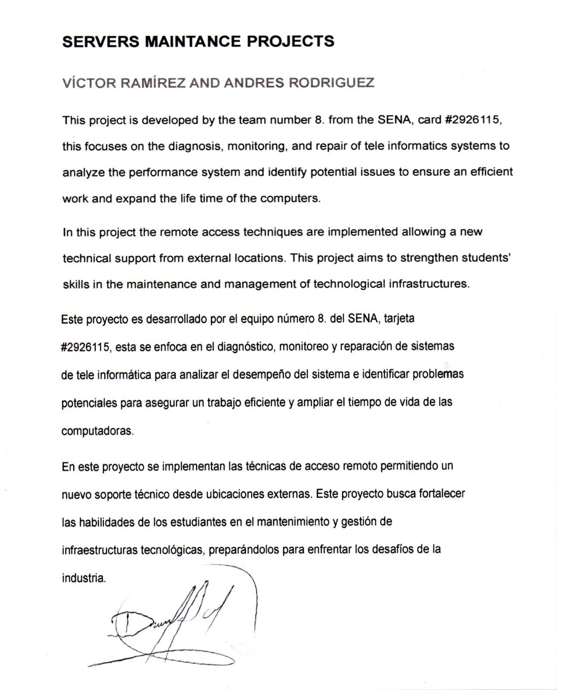

Nosotros somos una línea de acción conformada por dos estudiantes del colegio Montferri. Tenemos como meta personal el llevarnos un gran aprendizaje para mejorar a futuro y seguir con nuestras prácticas en el SENA.
1.1 Avance Técnico
Documento

Audio
1.2 Competencias del Programa y Resultados del Aprendizaje
Competencias del Programa
Instalar y configurar servidores DNS y servidores proxy según los requerimientos de red.
Gestionar el direccionamiento y resolución de nombres mediante servicios DNS.
Implementar políticas de filtrado de contenido y acceso mediante servidores proxy.
Documentar configuraciones técnicas de DNS y proxy utilizando formatos establecidos.
Resultados del Aprendizaje
Configurar servidores DNS para la resolución eficiente de nombres de dominio en una red local o corporativa.
Instalar y administrar servidores proxy para el control de acceso y optimización del uso de Internet.
Analizar el tráfico gestionado por el proxy y aplicar mejoras en la administración del servicio.
Elaborar documentación técnica sobre la instalación, configuración y pruebas realizadas en DNS y proxy.
1.3 Formulación del Problema
A pesar de la creciente dependencia de las tecnologías de red, muchas personas aún desconocen cómo funcionan los servidores, el sistema de nombres de dominio (DNS) y los proxys. Esta falta de conocimiento genera confusión al momento de configurar, utilizar o incluso comprender los servicios digitales más comunes. Además, la poca visibilidad de estos temas en espacios educativos o de divulgación técnica limita el acceso a soluciones eficientes y seguras.
Por ello, se hace necesario implementar estrategias de formación, acompañamiento y divulgación que permitan acercar estos conceptos a un público más amplio y facilitar su comprensión a través de prácticas guiadas y herramientas visuales.
1.4 Objetivos
Objetivo General
Brindar una comprensión clara y práctica sobre el funcionamiento de los servidores, proxys y servicios DNS, a través de experiencias educativas y técnicas que permitan al usuario reconocer su importancia, configuración y aplicaciones en el entorno digital actual.
Objetivos Específicos
Identificar las funciones principales de los servidores, proxys y servicios DNS en un entorno de red.
Diseñar sesiones prácticas que permitan una exploración guiada sobre la configuración y el uso de estos componentes.
Fomentar la divulgación de estos temas a través de herramientas digitales, redes sociales o espacios educativos.
Promover el trabajo colaborativo y el reparto de responsabilidades para facilitar el aprendizaje y la puesta en práctica de los conocimientos adquiridos.
1.5 Alcance del Proyecto
Definición de los límites y expectativas del proyecto.
1.6 Lugar de Implementación
Información sobre el entorno donde se aplicará el proyecto.
1.7 Infografía
Aquí se mostrará la infografía con información relevante del proyecto.
1.8 Formato de Acuerdo y Consentimiento
Sección con documentos sobre consentimiento y acuerdos.
1.9 Bitácora de Visitas
Registro detallado de las visitas y avances en el proceso.
1.10 Conclusiones de la Fase
Resumen de hallazgos y aprendizajes obtenidos en esta fase.